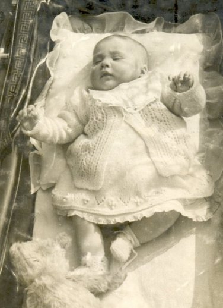
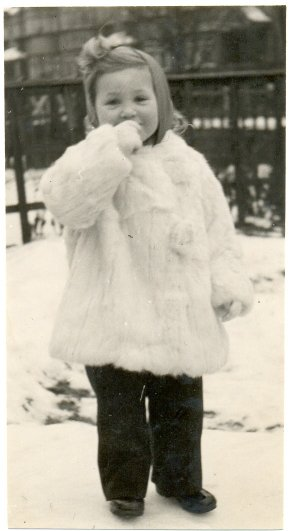

|
Born 20th December 1943
|
 |
My sister - Valerie Margaret
This was the seemingly innocent addition to our family, making five. Mum, Dad. John and I and now A SISTER - A GIRL!
I can remember as clearly as if it were yesterday my Gran (Rosemary) meeting me at the front gate, keeping it closed and handing me a penny. "Go to the British Restaurant for your lunch today, and when you get home this afternoon, your Mum will have a baby sister for you"
I would have been nine at the time. When I got back into school I straight away put my hand up - "Please Miss. (Miss Hampton her name) I have a baby sister" - Oh lovely, or words to that effect. and "How is your Mother?" - Oh fine, I replied, but I have a baby sister!
Whilst John and I both had a new pram (Dunkley's) Valerie had to make do with a second hand one due to the war. I don't think she minded, or even noticed. |
After the War
 This is Valerie at about two years of age, I would guess. Snow on the ground, that would date it at around December 1945, or early 1946. She looks well enough for a wartime baby. Well wrapped up. The tank traps have gone, I notice.
I can remember taking her, with John all day to Coney Hall slopes with a sledge. We sat her on it and pulled her all the way there. Once there we played with the sledge, forgot all about our sister and at tea time stuck her back on it and dragged her all the way home. She was crying as sisters do. Of course being young we didn't realise that she was FROZEN BLUE. We were OK but she had been left watching and sitting for hours on end. We caught it in the neck I can tell you, at least I did, being the eldest and should have known better! That seemed to set the pattern from then on. If Valerie started to cry, I got whacked!
A little later on, one of her friends had a two wheeled bicycle and she wanted to try it. She was not able to reach the pedals from the seat so stood on one pedal and put her leg through under the cross bar and rode the thing off tilted at 45°. That's my sister!
Another favourte trick of hers was to arrive home, her gym slip belt roped around some unfortunate dog, who probably wasn't lost anyway, called "laddie". The one I particularly remember was a wired haired terrier. I think he just liked being caught!
By the time she was seven, we had moved down to Gillingham. No 7 Park Avenue. Quite a splendid address with tennis courts in the garden and lots of apple and pear trees. We only lived there for a year as Dad needed to find a new warehouse for his business, and 49 Cuxton Road provided both a house an office, and an ideal warehouse, although mother didn't quite see it that way!
From that home Valerie went to St. Mary's school, and later to Pitman's at the top of Chatham Hill (Where she won the all England best speller contest). She used to go roller skating at the Casino, and was once seen on early Television. (I missed that) Most households didn't have one, and if they did it was only about a 7" screen. |